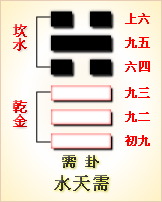

周易第五卦 需 水天需 坎上乾下
需：有孚，光亨，贞吉。利涉大川。
彖曰：需，须也;险在前也。刚健而不陷，其义不困穷矣。需有孚，光亨，贞吉。位乎天位，以正中也。利涉大川，往有功也。
象曰：云上於天，需;君子以饮食宴乐。
初九：需 于郊。利用恒，无咎。象曰：需于郊，不犯难行也。利用恒，无咎;未失常也。
九二：需于沙。小有言，终吉。象曰：需于沙，衍在中也。虽小有言，以终吉也。
九三：需于泥，致寇至。象曰：需于泥，灾在外也。自我致寇，敬慎不败也。
六四：需于血，出自穴。象曰：需于血，顺以听也。
九五：需于酒食，贞吉。象曰：酒食贞吉，以中正也。
上六：入于穴，有不速之客三人 来，敬之终吉。象曰：不速之客来，敬之终吉。虽不当位，未大失也。
需卦卦象，水天需卦的象征意义
需卦是易经64卦中第五卦：需，水天需卦有哪些具体的象征意义呢?
需卦，本卦是异卦相叠，上卦为坎，下卦为乾。乾卦象征天空辽阔，坎卦象征乌云密布。雨水之于传统农业社会而言，是最大的需求，因此用这个意象来表现。古人引申为雨将下，万物皆待，所以叫需。
需，古体字结构是“雨上天下”，从雨而声。如苍天下雨，滋养万物及人。从人的角度看，天下雨，则不易出行耕作，因此在家喝酒吃肉、静待天时。所以，这一卦的基本象征就是等待、不进，还有饮食之义。
需卦位于蒙卦之后，《序卦》之中这样解释道：“物稚不可不养也，故受之以需。需者，饮食之道也。”有所需要，也是有所等待。
《象》曰：云上于天，需;君子以饮食宴乐。
《象》中这段话的意思是说：需卦的卦象是乾(天)下坎(水)上，为水在天上之表象。水汽聚集天上成为云层，密云満天，但还没有下雨，需要等待;君子在这个时候需要吃喝，饮酒作乐，即在等待的时候积蓄力量。
需卦象征等待，启示人们守正待机的道理，属于中上卦。《象》这样评断此卦：明珠土埋日久深，无光无亮到如今，忽然大风吹土去，自然显露有重新。
此卦卦名为需。“需”在《说文》中的解释是：“需，须也，遇雨不进，止须也。”就是讲下雨了，必须找个地方避雨，等雨过天晴后再赶路。所以需卦便有等待的含义。前面屯卦是有云有雷表现的是要下雨，蒙卦则是下起了蒙蒙细雨，此卦则是等待雨过天晴。所以《杂卦传》中说：“履不处也，需不进也。”便是说需卦有等待的含义。而需卦还有另外一个意思，就是讲饮食之道。《序卦传》中说：“物稚不可以不养，故受之以需。需者，饮食之道也。”这便是说，屯卦处于事物的萌芽时期，相对于人来说就是婴儿期;蒙卦处于事物的蒙昧时期，相对于人来说就是儿童期;需卦则处于事物的生长期，相对于人来说便是少年时期。在生长期，自然最重要的便是饮食之道了。雨水与阳光给植物提供了饮食的所需，植物给食草动物提供了饮食所需，食草动物给食肉动物提供了饮食所需，动植物又给人类提供了饮食所需。长生期，必须要有充足的营养物质，所以需卦便也含有饮食之道的含义了。
需卦上卦为坎为水为云，下卦为乾为天为干燥，蓝天上面白云飘，这就是需卦的卦象，根本没下雨的意思。这是怎么回事呢?其实这个卦象表示的是人们等待后的情景。天下雨了，人们在等待中避雨，结果天晴了，可以走了。需卦卦象表示的便是最后这一阶段，即雨过天晴阶段。需卦的上卦坎还有险的含义，下卦乾有刚健的含义，所以这一卦还有遇险而止的意思，这一卦象与“需”的含义便较为贴切了。都有等待停止的意思了。可是以刚健涉险境，是可以走过险境的，所以这一卦的含义并非是让人们完全等待，也含有动的成分。孔子说：“书不尽言，言不尽意。”的确卦画的内涵是无法用一两句话说清楚的，所以卦名与卦辞也只是表现了卦画的一部分内容。下面我们通过卦辞来对这一卦进行具体的分析。
关键词：周易,需卦,水天需,坎上乾下
需卦：捉到俘虏。大吉大利，吉祥的占卜。有利于渡过大江 大河。
初九：在郊野停留等待，这样长久下去是吉利的，没有危险。
九二：在沙地停留等待，出了一点小过错，最后结果是吉利 的。
九三：在泥泞中停留等待，引来了强盗抢劫。
六四：陷入到血污之中，从地穴住处里逃脱出来。
九五：在酒席上留连等待，征兆吉利。
上六：进入地穴住处
⑴需是本卦标题。需的本义是天上下雨，卦象是表示天的“乾”和表示 云的“坎”相叠加。本卦因“需”字多次出现，便用它作标题。全卦内容主要是出行和客居。
(2)孚：本义是俘虏，也指获利。
(3)光亨：意思是 大亨，元亨。
(4)需：爻辞中“需”的意思是等待，停留。
(5)用：以， 于。恒：常，长久。
(6)沙：沙地，难走的地。”
(7)言：当作想用，意 思是过错。
(8)泥：．泥泞的地方。
(9)血：血污的地方。
(10)穴；古 时的住所，依地势挖建而成，下半是在地下挖出的小土穴，上半是在地面搭 建的屋顶。
(11)速：请，招。不速：没有邀请。